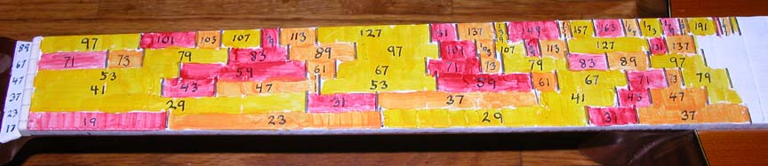

The Prime Guitar

The first guitar I refretted, the 21-Tone Just Intonation Guitar, used a 21 note scale derived from the harmonic series, using pitches up to the 7 prime limit, and with the scale repeating throughout the range of the instrument. After that, I wanted a guitar that would enable me to play in the harmonic series without limit-ations, so I next refretted an instrument into the Harmonic Series Guitar (webpage to follow). Being able to play partials like 11, 13, 17 and other higher primes was quite interesting, and I found myself wondering if an instrument could be designed that would play only higher prime partials.
The Prime Guitar is designed to play prime partials 17-199. The lowest string is tuned to the 17th partial of a series, and the successive strings are then tuned to partials 23, 37, 47, 67, and 89 to preserve the basic tonal spread of a standard set of guitar strings. Because the lowest partial is 17, there are no familiar intervals like octaves, fifths, thirds, etc., which are all lower prime limit intervals. Nevertheless, some intervals between higher primes approximate the lower prime limit intervals (e.g. 61/31), without of course reproducing them exactly. This gives the guitar a unique sound that can be heard in this piece composed and recorded on this instrument:
(dedicated to Dorota Bartniczuk, who generously donated the guitar that was converted into the Prime Guitar)
back to